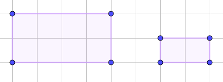
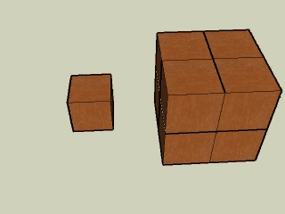
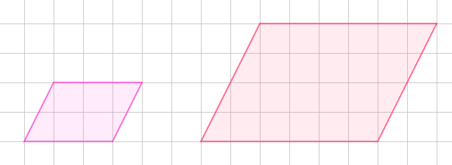

Teorema de Pitágoras. Semejanza
Razón de perímetros, áreas y volúmenes
La razón de dos longitudes correspondientes en figuras semejantes coincide con la razón de semejanza. Por tanto, la razón entre los perímetros también.
Ejemplo: la razón es ½ y el perímetro del mayor es 12 y el del pequeño 6

La razón de las áreas correspondientes en figuras semejantes coincide con el cuadrado de la razón de semejanza.
Ejemplo: la razón es ½ y el área del mayor es 8 y el del pequeño 2
La razón de los volúmenes correspondientes en figuras semejantes coincide con el cubo de la razón de semejanza.
Ejemplo: la razón es 2 y el volumen del menor es 1 y el del mayor 8

Ejercicios
1.- Deduce si las siguientes afirmaciones son verdaderas o falsas
Retroalimentación
Falso
Es ocho veces más grande
Retroalimentación
Verdadero
Al tener el área 4 veces superior es que es el doble de grande, luego su volumen será ocho veces el del pequeño
2.- Halla la razón de semejanza entre estas figuras. ¿Cuál es la razón entre sus perímetros?¿Y entre sus áreas?

Solución: 2; 2; 4
Obra publicada con Licencia Creative Commons Reconocimiento No comercial Compartir igual 4.0